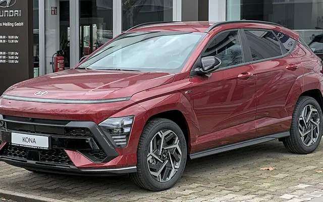

Par Motor › Precios por modelo › Hyundai Kona
Precio de segunda mano · noviembre de 2026¿Cuánto vale un Hyundai Kona de segunda mano?

Precio justo estimado de un Hyundai Kona usado en España, año por año, con los kilómetros normales para su edad y en buen estado: de 10.600 € a 33.600 €. Para tasar el tuyo con sus kilómetros reales y su estado, usa el tasador gratis.
Precios del Hyundai Kona por año
Kona I (2017–2023)
Precio de nuevo: 1.0 T-GDi 120 CV, 21.000 € · Hybrid 141 CV, 27.000 € · Eléctrico 39 kWh 136 CV, 36.000 €
| Año | Km normales | 1.0 T-GDi 120 CV · Gasolina | Hybrid 141 CV · Híbrido | Eléctrico 39 kWh 136 CV · Eléctrico |
|---|---|---|---|---|
| 2023 | 50.000 km | 16.100 € | 21.800 € | 23.500 € |
| 2022 | 65.000 km | 15.100 € | 20.300 € | 21.900 € |
| 2021 | 80.000 km | 13.500 € | 18.200 € | 19.600 € |
| 2020 | 95.000 km | 11.800 € | 15.900 € | 17.200 € |
| 2019 | 100.000 km | 11.100 € | 15.000 € | 16.200 € |
| 2018 | 100.000 km | 10.900 € | 14.700 € | 15.900 € |
| 2017 | 100.000 km | 10.600 € | 14.300 € | 15.500 € |
Kona II (2023–hoy)
Precio de nuevo: 1.0 T-GDi 120 CV, 26.000 € · Hybrid 141 CV, 31.000 € · Eléctrico 156 CV, 38.000 €
| Año | Km normales | 1.0 T-GDi 120 CV · Gasolina | Hybrid 141 CV · Híbrido | Eléctrico 156 CV · Eléctrico |
|---|---|---|---|---|
| 2026 | 5.000 km | 26.800 € | 33.600 € | 33.300 € |
| 2025 | 20.000 km | 23.000 € | 28.700 € | 28.500 € |
| 2024 | 35.000 km | 21.400 € | 26.800 € | 26.600 € |
| 2023 | 50.000 km | 20.000 € | 25.000 € | 24.800 € |
Kilómetros normales: 15.000 al año en gasolina, híbridos y eléctricos, y 20.000 en diésel, con un máximo de 100.000 km (por encima no tasamos: el precio depende demasiado del historial de cada coche). Cifras redondeadas a 100 €.
Preguntas frecuentes
¿Cuánto vale un Hyundai Kona de segunda mano?
Según el año, la versión y los kilómetros, un Hyundai Kona usado vale hoy de 10.600 € a 33.600 € en España. El más barato de nuestra tabla es un 1.0 T-GDi de 2017 (10.600 €) y el más caro un Hybrid de 2026 (33.600 €). Son precios justos estimados entre particulares y profesionales, con los kilómetros normales para su edad y en buen estado.
¿Qué motorizaciones tiene el Hyundai Kona?
En nuestra base de datos hay versiones gasolina, híbrido, eléctrico y diésel, en 2 generaciónes: Kona I y Kona II.
¿Cómo sé si me piden demasiado por un Hyundai Kona?
Abre el tasador de Par Motor, elige el Hyundai Kona, el año y los kilómetros reales, y escribe lo que te piden. Te diremos si está por debajo del precio justo (chollo) o por encima (caro). Es gratis y no pide registro ni matrícula.
Otros Hyundai
Compara su coste real
El precio de compra es solo una parte. Mira cuánto te costaría al mes con combustible, seguro, neumáticos, mantenimiento y lo que pierde de valor.
Abrir el comparador →